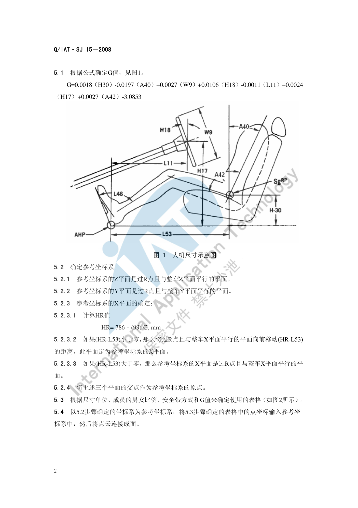
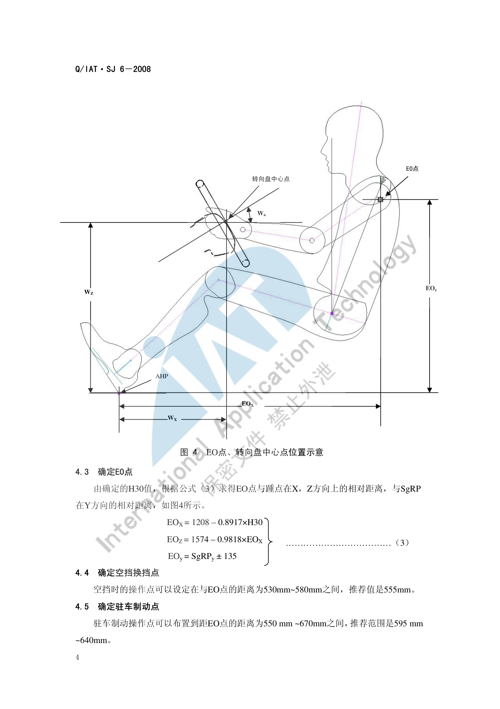

操作可达性¶
内容来源
本页正文抽取自《总布置》知识库中**可文本解析**的文件：
SJ 15-2008 手伸及界面设计规范、SJ 6-2008 驾驶员人机硬点设计规范、
QCD-A0-005 概念草图阶段总布置检查规范。
另可参照《通用汽车设计标准》（GM U00～U20 手部操作件系列、T01～T05 踏板与点火锁系列）。
企业规范编号原样保留。
可达性校核体系¶
flowchart LR
N0["操作可达性"]
N1["手伸及界面"]
N0 --> N1
N2["G 因子 驾驶员尺寸综合因子"]
N1 --> N2
N3["HR 参考平面基准 786-99G"]
N1 --> N3
N4["参考坐标系 过R点的XYZ三面"]
N1 --> N4
N5["SAE J287 表格选表"]
N1 --> N5
N6["三指面 基准"]
N1 --> N6
N7["指尖面 前移50mm"]
N1 --> N7
N8["手掌面 后移50mm"]
N1 --> N8
N9["操作件布置"]
N0 --> N9
N10["换挡手柄 距EO 530-580"]
N9 --> N10
N11["驻车制动 距EO 550-670"]
N9 --> N11
N12["转向盘 中心与倾角"]
N9 --> N12
N13["三踏板 PW1-PW13"]
N9 --> N13
N14["中控按键 手伸及面内"]
N9 --> N14
N15["校核方法"]
N0 --> N15
N16["法规清单校核"]
N15 --> N16
N17["Ramsis 不舒适度对比"]
N15 --> N17
N18["包络面与干涉检查"]
N15 --> N18
N19["注意事项"]
N0 --> N19
N20["安全带约束"]
N19 --> N20
N21["戴手套余量"]
N19 --> N21
N22["操作频率分级"]
N19 --> N22概述¶
要点¶
操作可达性解决的是"驾驶员在系好安全带的约束姿态下，能不能够到、够得舒不舒服"。它由三部分构成：
| 层次 | 内容 | 主要依据 |
|---|---|---|
| 基准 | 由坐姿推出的 EO 点、转向盘中心、H30/A40/W9/H18 等 | SJ 6-2008 |
| 工具 | 手伸及界面（三指/指尖/手掌三种曲面） | SJ 15-2008（依据 SAE J287-1988-06） |
| 判据 | 操作件是否落在界面内 + 不舒适度是否优于竞品 | QCD-A0-005 §4.3 |
核心判据一句话：换挡手柄包络与手刹包络必须落在驾驶员手握式手伸及界面之内；更合理的做法是用 Ramsis 模拟校核 95%/50%/5% 假人在对应 H 点位置操作换挡手柄与手刹的舒适性，用**不舒适度值**与竞争车型对比后改进。
示例¶
手伸及界面的制作必须先把 G 因子与参考坐标系算出来，再据此选表生成点云——这是"公式定表、表定曲面"的三步结构。

注意事项¶
- 手伸及界面的适用车型为 A 类车和部分 B 类车（不含重卡）；商用车需另选标准。
- 界面是"可触及"的几何边界，不等于"舒适可达"——舒适性需用不舒适度或不舒适度对比法单独评价。
手伸及包络¶
要点¶
（1）输入条件（SJ 15-2008 §4）
| 代码 | 含义 |
|---|---|
| A40 | 靠背角 |
| H30 | R 点到 AHP 的垂直距离 |
| W9 | 转向盘直径 |
| H18 | 转向盘倾角 |
| L11 | 转向盘中心到踵点的水平距离 |
| H17 | 转向盘中心到踵点的垂直距离 |
| A42 | 躯干线与大腿线夹角 |
| L53 | R 点到 AHP 的水平距离 |
（2）G 因子（驾驶员尺寸的综合因子）
G = 0.0018×H30 - 0.0197×A40 + 0.0027×W9 + 0.0106×H18
- 0.0011×L11 + 0.0024×H17 + 0.0027×A42 - 3.0853
（3）参考坐标系（SJ 15-2008 §5.2）
- Z 平面：过 R 点且与整车 Z 平面平行；
- Y 平面：过 R 点且与整车 Y 平面平行；
- X 平面：先计算
HR = 786 - 99 × G（mm）； - 若
(HR - L53) < 0，把过 R 点且与整车 X 平面平行的平面**向前移动 (HR − L53)** 的距离，该平面即为参考坐标系 X 平面； - 若
(HR - L53) > 0，则参考坐标系 X 平面就是过 R 点、与整车 X 平面平行的平面； - 三个平面的交点即为**参考坐标系原点**。
（4）选表与生成（§5.3～§5.4）
按"尺寸单位 + 男女比例 + 安全带形式 + G 值"选定 SAE J287 表格，再把表中点坐标输入参考坐标系，**将点云连接成面**即得手伸及界面。选表顺序为：
- 选单位为 mm 的表格（不用英寸表）；
- 按 **G 值**筛出对应表格；
- 排除男女比例**不是 50/50** 的表格；
- 最后按**安全带形式**确定唯一表格。
示例¶
SJ 15-2008 §6.1 给出三种操作界面的换算关系：表中确定的曲面是**三指操作**曲面，要得到**指尖操作**和**手掌操作**界面，可分别把三指界面**向前或向后偏移 50 mm**。
| 界面类型 | 相对三指面的偏移 | 典型适用 |
|---|---|---|
| 指尖操作面 | 向后（靠内）偏移 50 mm | 屏幕、按键、旋钮等精细操作 |
| 三指操作面 | 基准面 | 拨杆、拉手等常规操作 |
| 手掌操作面 | 向前（外扩）偏移 50 mm | 换挡杆、手刹等大行程操作 |
注意事项¶
- **安全带约束状态**是选表的必要条件之一——同一车型在三点式安全带与两点式安全带下界面不同，不能混用。
- G 值对结果敏感：W9（方向盘直径）与 H18（倾角）的改动都会平移 G，进而改变整个界面曲面的前后位置，方向盘硬点冻结后应重算界面。
常用操作件布置¶
要点¶
（1）换挡与驻车制动（SJ 6-2008 §4.4～4.5）
| 操作件 | 布置要求 | 推荐值 |
|---|---|---|
| 空挡换挡操作点 | 与 EO 点距离 530～580 mm | 555 mm |
| 驻车制动操作点 | 与 EO 点距离 550～670 mm | 595～640 mm |
EO 点由 H30 推出（见坐姿与 H 点）：EOX = 1208 - 0.8917×H30，EOZ = 1574 - 0.9818×EOX，EOy = SgRPy ± 135。
（2）转向盘（SJ 6-2008 §4.2，QCD-A0-005 §4.3）
- 转向盘中心相对 AHP：
WX = 676 - 0.786×H30，WZ = 1063 - 0.903×WX； - 转向盘倾角：
Wa = 0.08×H30 + 3；按车型经验值——轿跑 22°–24°、轿车 23°–26°、SUV 25°–28°。
（3）三踏板（QCD-A0-005 表 3）
| 代码 | 含义 | 推荐值 | 备注 |
|---|---|---|---|
| PW1 | 油门踏板与内饰 Y 向距离 | > 40 mm | |
| PW11 | 油门踏板与制动踏板 Y 向距离 | 60–80 mm | |
| PW12 | 制动踏板与离合踏板 Y 向距离 | 70–80 mm | 手动档 |
| PW13 | 离合踏板与歇脚板 Y 向距离 | 80–120 mm | 手动档 |
| PW7 | 油门踏板与人体中心线 Y 向距离 | 155–200 mm | |
| PW8 | 制动踏板与人体中心线 Y 向距离 | 50–80 mm | |
| PW9 | 离合踏板与人体中心线 Y 向距离 | 80–90 mm | 手动档 |
（4）操作件分区原则
按"操作频率 × 视线离开需求"把操作件分三档布置：
| 档位 | 特征 | 布置位置 | 示例 |
|---|---|---|---|
| 高频—盲操作 | 行驶中频繁使用、不离开视线 | 必须落在手伸及界面内且靠近转向盘 | 转向灯拨杆、雨刮拨杆、喇叭、换挡 |
| 中频—短时视线 | 需要短暂注视 | 手伸及界面内、视线可快速扫到 | 空调出风口调节、中控按键、驻车制动 |
| 低频—停车操作 | 行驶中不用 | 允许在界面边缘或界面外 | 手套箱、点烟器、储物盒 |
示例¶
由 H30 直接推出转向盘中心与 EO 点的做法，体现了"先定坐姿、再定操纵件"的顺序——把操纵件位置表达为坐姿参数的函数，而不是各自独立取值：

注意事项¶
- 操作频率决定布置优先级：当空间冲突时，高频盲操作件的可达性**不得**让步给低频件。
- 换挡/手刹使用**包络**而非单体校核：手柄的全行程运动包络都必须在界面内，否则极限挡位会出现够不到的情况。
- 中控屏幕的"可达性"不能只看指尖是否够到，还需同时满足**可见性**与**反光/眩目**要求（见
SJ 8-2008 仪表反光及炫目设计规范）。
可达性校核方法¶
要点¶
| 方法 | 做法 | 适用阶段 |
|---|---|---|
| 包络面法 | 先生成手伸及界面，再把操作件包络投影进去逐项检查 | 概念草图 → 详细设计 |
| 假人姿态法 | 用 Ramsis 等软件加载 95%/50%/5% 假人在对应 H 点位置模拟操作 | 效果图 → 详细设计 |
| 不舒适度对比法 | 输出不舒适度值，与竞争车型对比后改进 | 详细设计 |
| 法规清单法 | 按 QCD-A0-005 检查项逐条打勾，保留"结论 + 图片示意" |
各阶段 |
Ramsis 校核的推荐用法（QCD-A0-005 §4.3）：分别校核 95%、50%、5% 假人在各自 H 点位置操作换挡手柄与手刹的舒适性，得出不舒适度值并与竞争车型对比；根据不舒适度值大小的对比即可知道新车型与竞品差异并作出改进。
示例¶
可达性校核的最小闭环：界面生成 → 操作件包络投影 → 逐项打勾 → 记录结论与图片 → 不舒适度对标 → 整改 → 复算。校核结论建议保留"结论 + 图片示意"两列以留痕。
注意事项¶
- 戴手套操作的余量要求：涉寒区或商用车型需为手套厚度留出可达性余量，做法是把三指界面适当外扩（参考 §6.1 的 ±50 mm 思路）后重新校核。
- 不舒适度是**相对指标**：没有竞品基准时，应改用绝对姿态角范围（如 A42/A44）与手伸及界面双重判据。
- 校核工具只回答"能否够到"，不能替代实车主观评价；样椅阶段应让不同身材的评价者实际体验。
待人工补充¶
以下条目无法自动提取或尚未纳入，需人工补充
SJ 15-2008附录 A（SAE J287 中单位为 mm、男女比例 50/50 的表格页）为**图片**，无文本层， 界面点坐标需人工查阅原表；- 《通用汽车设计标准》（GM）中与手部操作件直接相关的条目尚未逐份解析，可作为补充素材：
U00_GenHandContOp（通用手部操作件）、U01_ContMotiOpExp、U02_PushBttn（按钮）、U06_RoundKnob（旋钮）、U08_ThumbWhl、U09_Joystick、U14_StalkLvr（拨杆）、T01_IgnitionCyl（点火锁）、T05_PkBrkPed（驻车制动踏板）、T04_LeftFootRest（左脚歇脚板）； - 知识库中以下文件虽高度相关但因读取问题**未采用**：
AEM-A5-201 手伸及界面及仪表控制面板校核规范与流程、AEM-A5-203 方向盘位置设计、AEM-A5-107/108 内外扣手布置规范。
建议：在 IMA 客户端中打开对应文件补充条款，或按"规范编号 + 页码"方式人工引用。